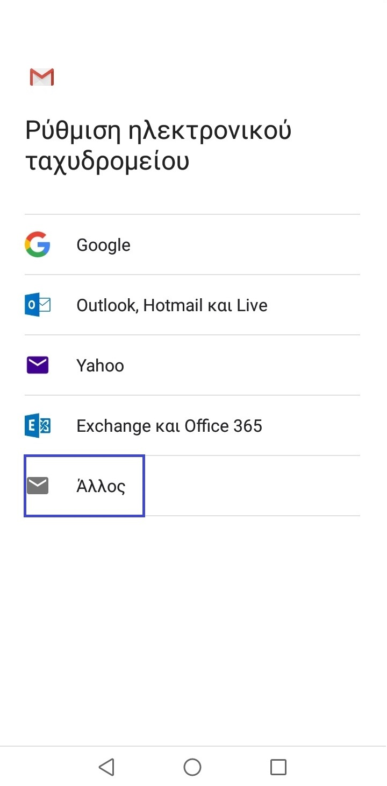
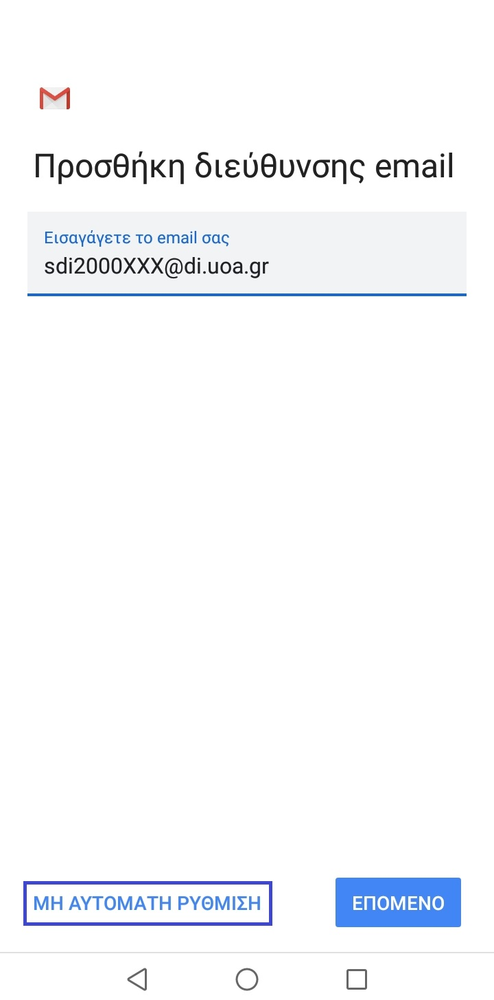
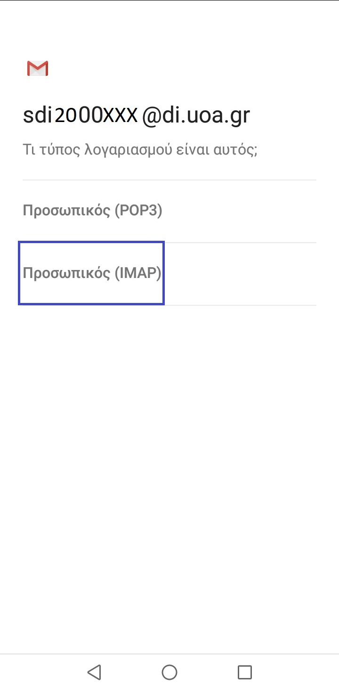
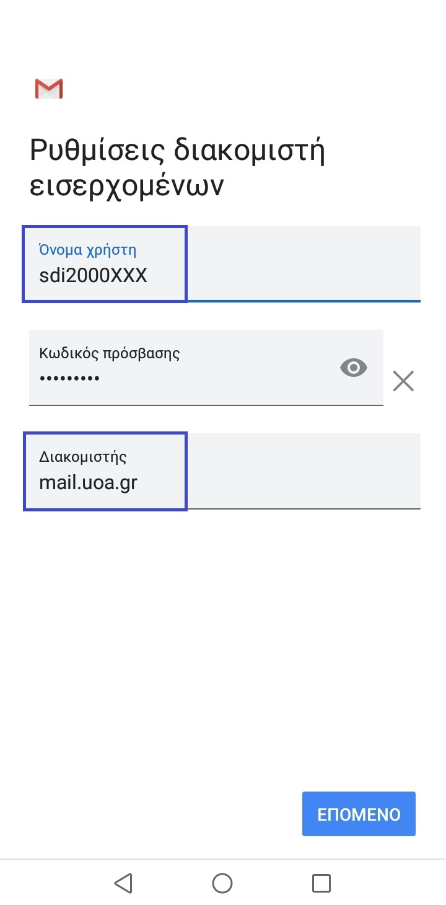
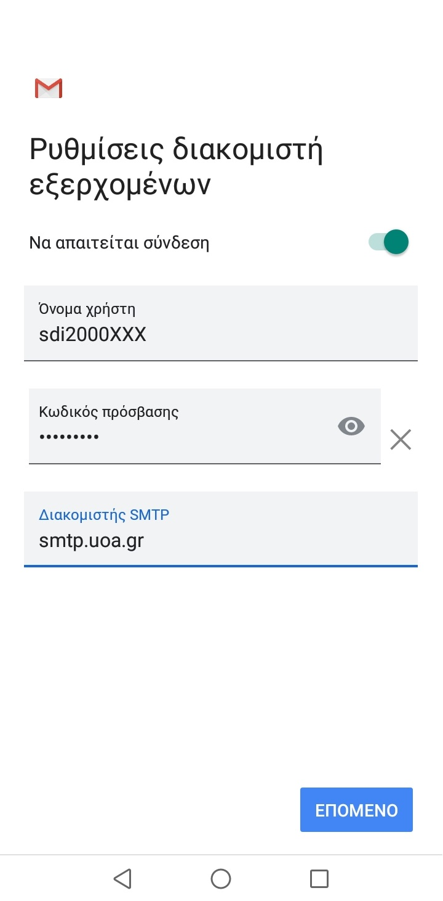
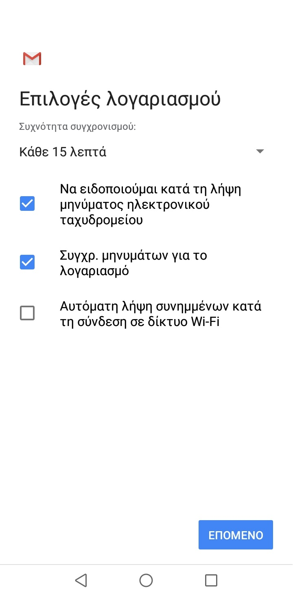
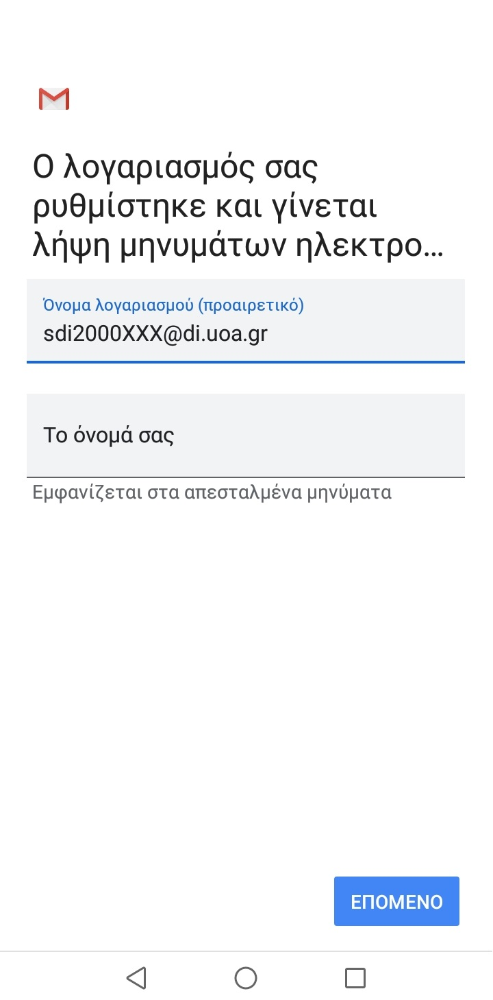
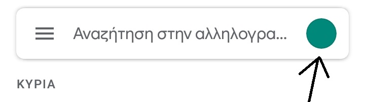

Αρχικά, ανοίγουμε το Gmail στο κινητό και πάμε στις Ρυθμίσεις, όπου πατάμε στην επιλογή Προσθήκη λογαριασμού.
Θα εμφανιστεί αυτή η οθόνη, όπου και θα επιλέξετε Άλλος.
Εισάγεται το email σας, που είναι της μορφής που φαίνεται στην φωτογραφία, και επιλέγεται την μη αυτόματη ρύθμιση.
Ο τύπος του λογαριασμού μας είναι IMAP.
Στην συνέχεια, καλούμαστε να συμπληρώσουμε τις ρυθμίσεις διακομιστή εισερχομένων.
Προσοχή! Στο πεδίο "όνομα χρήστη", δεν γράφουμε όλη την διεύθυνση email, που έχει προσυμπληρωμένο το Gmail, αλλά μόνο το όνομα χρήστη. (sdi2000XXX)
Επίσης, αλλάζουμε τον διακομιστή σε mail.uoa.gr
Σειρά έχουν οι ρυθμίσεις διακομιστή εξερχομένων. Συμπληρώστε τες, όπως φαίνονται στην εικόνα. Δώστε έμφαση στα πεδία "Όνομα χρήστη" και "διακομιστή SMTP".
Είμαστε σχεδόν έτοιμοι. Επιλέγουμε συχνότητα συγχρονισμού τα 15", ώστε να λαμβάνουμε έγκαιρα τα email μας και απενεργοποιούμε την αυτόματη λήψη συνημμένων.
Τέλος, συμπληρώνουμε το όνομα του λαγαριασμού, όπως αυτό θα φαίνεται στο Gmail, καθώς και το όνομα που θα εμφανίζεται στα απεσταλμένα μηνύματα.
Σε αυτό το σημείο, είστε έτοιμοι να χρησιμοποιήσετε τον λογαριασμό email της σχολής, για να στέλνετε email και να μην χάνετε ποτέ σημαντικές ανακοινώσεις καθηγητών, από το πρόγραμμα Gmail του κινητού σας!
Απ΄ το μενού του Gmail μπορείτε να επιλέξετε ποιόν λογαριασμό θέλετε να επιλέξετε για να στείλετε email/ για να δείτε τα εισερχόμενα μηνύματα.
